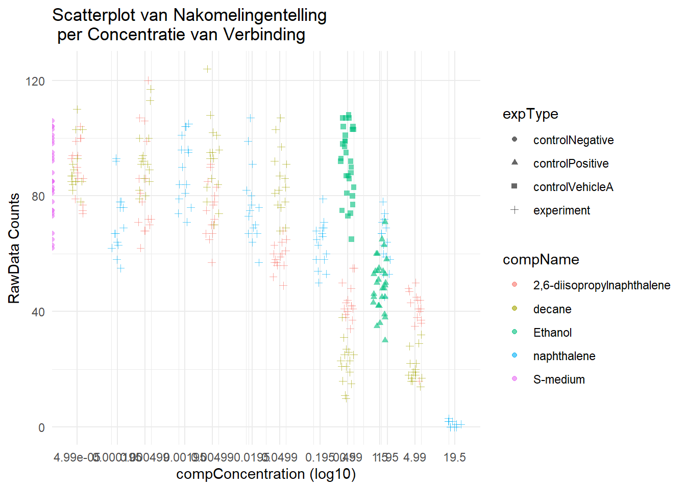

Chapter3 C.elegans plate experiment
3.0.1 Laad de juiste bibliotheek
# Lees het excel file in
C_elegans_data <- read_excel("~/portfolio/CE.LIQ.FLOW.062_Tidydata.xlsx")
# Structuur van de data
str(C_elegans_data)## tibble [360 × 34] (S3: tbl_df/tbl/data.frame)
## $ plateRow : logi [1:360] NA NA NA NA NA NA ...
## $ plateColumn : logi [1:360] NA NA NA NA NA NA ...
## $ vialNr : num [1:360] 1 1 1 1 1 2 2 2 2 2 ...
## $ dropCode : chr [1:360] "a" "b" "c" "d" ...
## $ expType : chr [1:360] "experiment" "experiment" "experiment" "experiment" ...
## $ expReplicate : num [1:360] 3 3 3 3 3 3 3 3 3 3 ...
## $ expName : chr [1:360] "CE.LIQ.FLOW.062" "CE.LIQ.FLOW.062" "CE.LIQ.FLOW.062" "CE.LIQ.FLOW.062" ...
## $ expDate : POSIXct[1:360], format: "2020-11-30" ...
## $ expResearcher : chr [1:360] "Sergio Reijnders - Ellis Herder" "Sergio Reijnders - Ellis Herder" "Sergio Reijnders - Ellis Herder" "Sergio Reijnders - Ellis Herder" ...
## $ expTime : num [1:360] 68 68 68 68 68 68 68 68 68 68 ...
## $ expUnit : chr [1:360] "hour" "hour" "hour" "hour" ...
## $ expVolumeCounted : num [1:360] 50 50 50 50 50 50 50 50 50 50 ...
## $ RawData : num [1:360] 44 37 45 47 41 35 41 36 40 38 ...
## $ compCASRN : chr [1:360] "24157-81-1" "24157-81-1" "24157-81-1" "24157-81-1" ...
## $ compName : chr [1:360] "2,6-diisopropylnaphthalene" "2,6-diisopropylnaphthalene" "2,6-diisopropylnaphthalene" "2,6-diisopropylnaphthalene" ...
## $ compConcentration : chr [1:360] "4.99" "4.99" "4.99" "4.99" ...
## $ compUnit : chr [1:360] "nM" "nM" "nM" "nM" ...
## $ compDelivery : chr [1:360] "Liquid" "Liquid" "Liquid" "Liquid" ...
## $ compVehicle : chr [1:360] "controlVehicleA" "controlVehicleA" "controlVehicleA" "controlVehicleA" ...
## $ elegansStrain : chr [1:360] "N2" "N2" "N2" "N2" ...
## $ elegansInput : num [1:360] 25 25 25 25 25 25 25 25 25 25 ...
## $ bacterialStrain : chr [1:360] "OP50" "OP50" "OP50" "OP50" ...
## $ bacterialTreatment : chr [1:360] "heated" "heated" "heated" "heated" ...
## $ bacterialOD600 : num [1:360] 0.743 0.743 0.743 0.743 0.743 0.743 0.743 0.743 0.743 0.743 ...
## $ bacterialConcX : num [1:360] 8 8 8 8 8 8 8 8 8 8 ...
## $ bacterialVolume : num [1:360] 300 300 300 300 300 300 300 300 300 300 ...
## $ bacterialVolUnit : chr [1:360] "ul" "ul" "ul" "ul" ...
## $ incubationVial : chr [1:360] "1,5 glass vial" "1,5 glass vial" "1,5 glass vial" "1,5 glass vial" ...
## $ incubationVolume : num [1:360] 1000 1000 1000 1000 1000 1000 1000 1000 1000 1000 ...
## $ incubationUnit : chr [1:360] "ul" "ul" "ul" "ul" ...
## $ incubationMethod : chr [1:360] "rockroll" "rockroll" "rockroll" "rockroll" ...
## $ incubationRPM : num [1:360] 35 35 35 35 35 35 35 35 35 35 ...
## $ bubble : logi [1:360] NA NA NA NA NA NA ...
## $ incubateTemperature: num [1:360] 20 20 20 20 20 20 20 20 20 20 ...## # A tibble: 6 × 34
## plateRow plateColumn vialNr dropCode expType expReplicate expName
## <lgl> <lgl> <dbl> <chr> <chr> <dbl> <chr>
## 1 NA NA 1 a experi… 3 CE.LIQ…
## 2 NA NA 1 b experi… 3 CE.LIQ…
## 3 NA NA 1 c experi… 3 CE.LIQ…
## 4 NA NA 1 d experi… 3 CE.LIQ…
## 5 NA NA 1 e experi… 3 CE.LIQ…
## 6 NA NA 2 a experi… 3 CE.LIQ…
## # ℹ 27 more variables: expDate <dttm>, expResearcher <chr>,
## # expTime <dbl>, expUnit <chr>, expVolumeCounted <dbl>,
## # RawData <dbl>, compCASRN <chr>, compName <chr>,
## # compConcentration <chr>, compUnit <chr>, compDelivery <chr>,
## # compVehicle <chr>, elegansStrain <chr>, elegansInput <dbl>,
## # bacterialStrain <chr>, bacterialTreatment <chr>,
## # bacterialOD600 <dbl>, bacterialConcX <dbl>, …# Check de verschillende kolommen van de data
str(C_elegans_data[c("RawData", "compName", "compConcentration")])## tibble [360 × 3] (S3: tbl_df/tbl/data.frame)
## $ RawData : num [1:360] 44 37 45 47 41 35 41 36 40 38 ...
## $ compName : chr [1:360] "2,6-diisopropylnaphthalene" "2,6-diisopropylnaphthalene" "2,6-diisopropylnaphthalene" "2,6-diisopropylnaphthalene" ...
## $ compConcentration: chr [1:360] "4.99" "4.99" "4.99" "4.99" ...## [1] "numeric"## [1] "character"## [1] "character"# verander 'compConcentration' van character naar numeric
C_elegans_data$compConcentration <- as.numeric(C_elegans_data$compConcentration)## Warning: NAs introduced by coercion3.1 De gemaakte scatterplot
# Laad de package ggplot
library(ggplot2)
# Maak de scatterplot met de log10 transformatie en jitter
ggplot(C_elegans_data, aes(x = compConcentration, y = RawData, color = compName, shape = expType)) +
geom_point(position = position_jitter(width = 0.1, height = 0), alpha = 0.6) +
labs(
x = "compConcentration (log10)",
y = "RawData Counts",
color = "compName",
title = "Scatterplot van Nakomelingentelling \n per Concentratie van Verbinding"
) +
scale_x_continuous(trans = "log10", breaks = unique(C_elegans_data$compConcentration), labels = unique(C_elegans_data$compConcentration)) +
theme_minimal()## Warning: Transformation introduced infinite values in continuous
## x-axis## Warning: Removed 6 rows containing missing values
## (`geom_point()`). In de bovenstaande grafiek is te zien dat S-medium de negatieve controle is en ethanol de positieve controle.
3.2 Eigen analyse stappen
3.2.1 Stap 1: Data Verkenning en Samenvattende Statistieken
- Samenvattende Statistieken: Bereken beschrijvende statistieken (gemiddelde, mediaan, standaardafwijking, etc.) van het aantal nakomelingen (
RawData) voor elke verbinding bij verschillende concentraties. - Visuele Inspectie: Maak visualisaties (bijv. boxplots, lijngrafieken) om de verdeling van het aantal nakomelingen over verschillende concentraties en verbindingen te observeren.
3.2.2 Stap 2: Concentratie-Respons Relatie
- Dosis-Respons Curve: Construeer dosis-responscurves voor elke verbinding door het aantal nakomelingen uit te zetten tegen concentraties.
- IC50 Schatting: Gebruik geschikte modellen of methoden (bijv. niet-lineaire regressie) om de IC50-waarden voor elke verbinding te schatten. Vergelijk de IC50-waarden tussen verbindingen om verschillen in potentie te bepalen.
3.2.3 Stap 3: Statistische Analyse
- ANOVA of Regressie: Voer statistische tests uit (bijv. ANOVA, lineaire of niet-lineaire regressie) om de relatie tussen concentraties en aantal nakomelingen te beoordelen.
- Vergelijkende Analyse: Vergelijk statistisch het effect van concentraties op het aantal nakomelingen tussen verschillende verbindingen.
3.2.4 Stap 4: Hypothesetoetsing
- Nulhypothese: Formuleer nul- en alternatieve hypothesen om te testen of er een significant effect is van concentratie op het aantal nakomelingen en of verschillende verbindingen verschillende reacties vertonen.
- Hypothesetoetsing: Voer hypothesetesten uit (bijv. t-toetsen, ANOVA) om de significantie van verschillen in aantal nakomelingen over concentraties en tussen verbindingen te evalueren.
3.2.5 Stap 5: Modelopstelling en Validatie
- Modelselectie: Pas passende concentratie-responsmodellen toe (bijv. Hill-vergelijking, sigmoïdale curve) op de data en valideer de kwaliteit van de pasvorm.
- Cross-Validatie: Indien van toepassing, voer cross-validatie uit om de voorspellende kracht van de modellen te beoordelen.
3.2.6 Stap 6: Interpretatie en Conclusie
- Interpreteer Resultaten: Analyseer de bevindingen van statistische analyses, concentratie-responscurves en IC50-schattingen.
- Conclusie: Trek conclusies over het effect van concentraties op het aantal nakomelingen en eventuele verschillen tussen verbindingen. Bespreek de implicaties en beperkingen van de studie.
3.2.7 Stap 7: Extra Overwegingen
- Controle Vergelijking: Vergelijk resultaten met controlegroepen (indien beschikbaar) om het basiseffect te begrijpen.
- Data-transformatie: Indien nodig, pas data-transformaties toe (bijv. normalisatie) voor een betere analyse en interpretatie.
- Controle van Aannames: Valideer aannames van gebruikte statistische tests en modellen.
Door deze stappen systematisch te volgen, kan een grondige analyse worden uitgevoerd om te bepalen of verschillende concentraties een effect hebben op het aantal nakomelingen en of er verschillende concentratie-responsrelaties bestaan tussen verschillende verbindingen in het experiment.
3.3 De genormaliseerde data voor de control negative
# Calculate the mean of controlNegative
mean_controlNegative <- mean(C_elegans_data$controlNegative, na.rm = TRUE)
# Normalize the data
C_elegans_data_normalized <- C_elegans_data
C_elegans_data_normalized[, -c(1:4)] <- C_elegans_data_normalized[, -c(1:4)] / mean_controlNegative
C_elegans_data_normalized$controlNegative <- C_elegans_data$controlNegative / mean_controlNegative
# Rerun the scatterplot with log10 transformation and jitter using the normalized data
ggplot(C_elegans_data_normalized, aes(x = compConcentration, y = RawData, color = compName, shape = expType)) +
geom_point(position = position_jitter(width = 0.1, height = 0), alpha = 0.6) +
labs(
x = "compConcentration (log10)",
y = "RawData Counts",
color = "compName",
title = "C. elegans Plaat Experiment: Scatterplot van Nakomelingentelling per Concentratie van Verbinding (Genormaliseerde Data)"
) +
scale_x_continuous(trans = "log10", breaks = unique(C_elegans_data_normalized$compConcentration),
labels = unique(C_elegans_data_normalized$compConcentration)) +
theme_minimal()